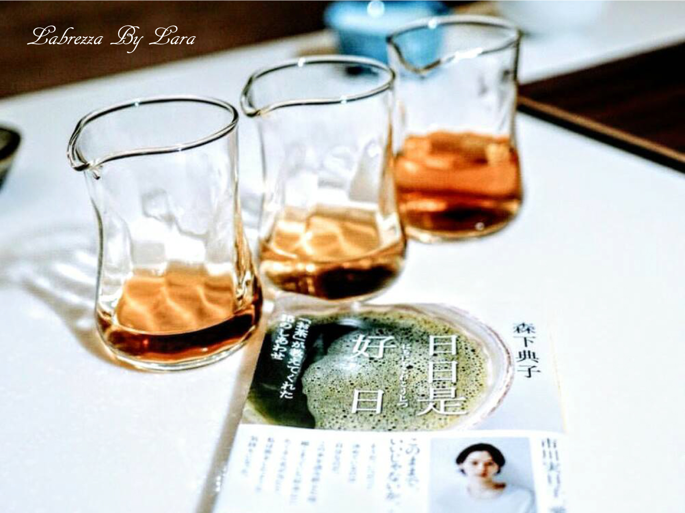
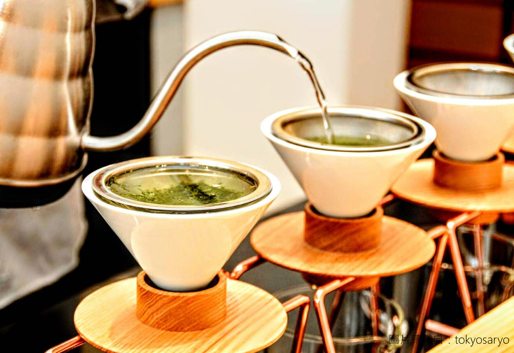
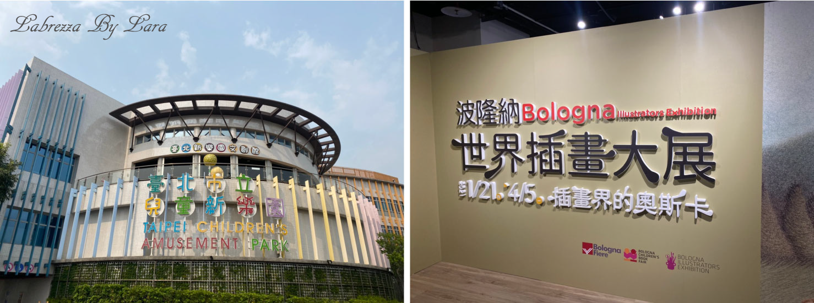
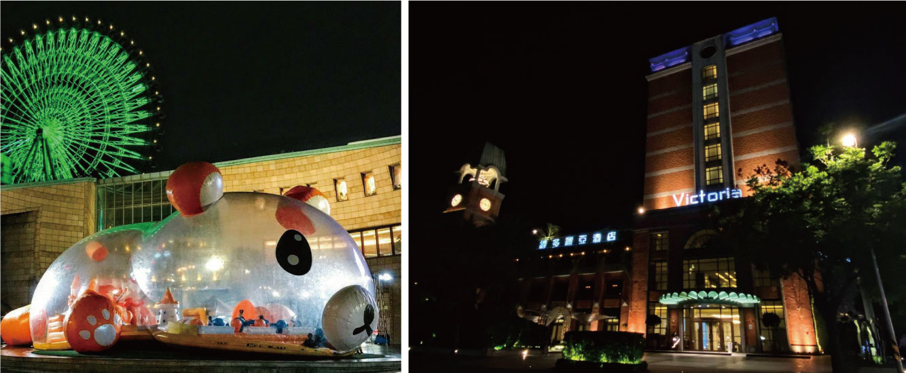
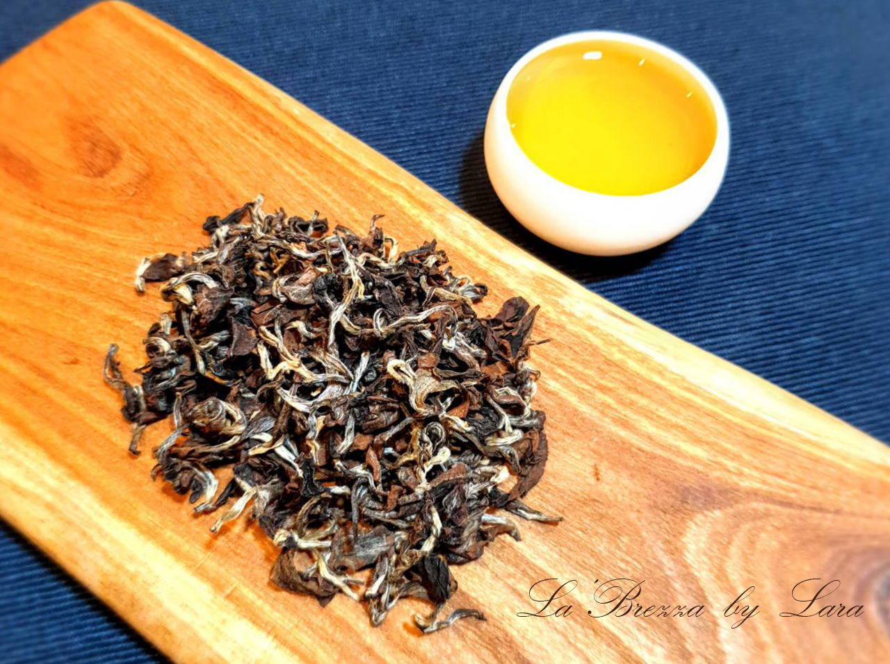
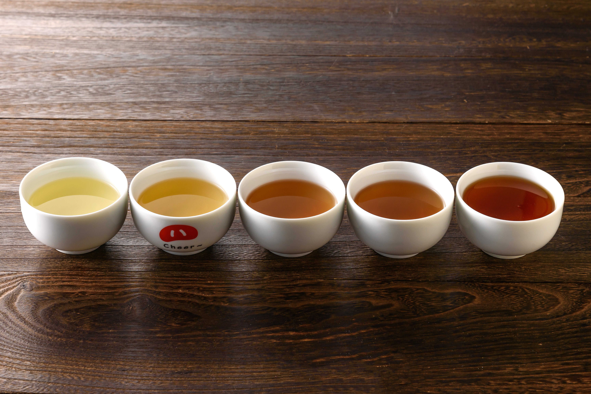

2021.08.21

時時好時 終能日日是好日
書中 清新淡雅的筆觸精華 結合茶道精髓
觀後分享 "習茶"與"生活"緩緩交融的美妙
2021.08.21

時時好時 終能日日是好日
書中 清新淡雅的筆觸精華 結合茶道精髓
觀後分享 "習茶"與"生活"緩緩交融的美妙
2021.08.04

在咖啡受到注目與愛好的現代社會
東方傳統壺泡茶總令人有老派印象
但新穎手沖茶飲如同喝咖啡般時尚
也擁有與前者相同的專業度與氛圍
2021.04.17

年度盛大《波隆納世界插畫展》
今年再次來台
風玥茶研所 把握展期前往兒童新樂園文創館
感受年度盛事「插畫界奧斯卡」
多位插畫家精心之作！
2021.03.14

疫情期間
適合旅遊的範圍縮減不少
但相信各位對於旅行的興致依舊不減
即便生活再怎麼忙碌也值得放慢腳步
為生活增添美好
自在感受慢生活
風玥茶研所邀您一同享受這趟
2020.10.26

近年來特色酒吧 以茶入酒
許多日式居酒屋 將燒酎調配烏龍茶
目前覺得最對味 莫過東美搭威士忌
香氣滋味很協調 微醺又帶有浪漫感
2021.08.07

更迭四季的自然脈絡
猶如茶界的時尚秀如火如荼地流暢行進著
春日，如評鑑器具沿著伸展台成列微微蔓延
炙夏，誠如秀導般茶人匠心的獨具與熱情
秋曲，劃出茶葉葉脈恰若模特兒走秀的核心路線
隆冬，猶然茶色佈白間紮染青淺或琥珀
回春，宛於空間與茶品之間喚起摩登魅力景象